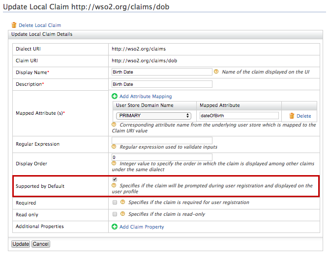
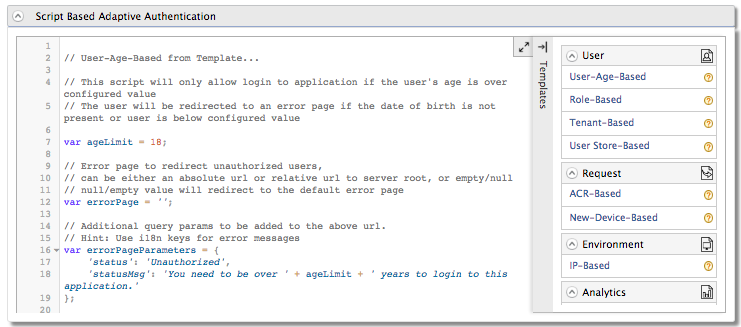
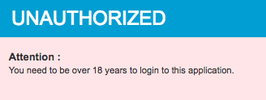

Configuring User-Age-Based Adaptive Authentication¶
This scenario demonstrates user-age-based adaptive authentication in WSO2 Identity Server using sample authenticators. The instructions below guide you through specifying authentication steps based on the user's age. In this example, any user who is underage and below the specified age limit (i.e., under the age of 18 years) is restricted access and prevented from logging in to the application.
Tip
Before you begin
- Set up the service provider and sample application for adaptive authentication. For instructions on how to do this, see Configuring a Service Provider for Adaptive Authentication .
- For more information about adaptive authentication with WSO2 Identity Server, see Adaptive Authentication .
Configuring the sample scenario¶
- Log in to the management console.
- Click List under Claims and click http://wso2.org/claims .
- Click on the Edit corresponding to the BirthDate claim and
select the Supported By Default checkbox to enable the birth
date claim.
 -
Create a user called "Alex" and edit the user profile. Enter a birth date that specifies Alex as under 18 years of age.
Enter the birth date in the following format: <yyyy-mm-dd>.
-
Next, create another user called "Kim" and edit the user profile. Enter a birth date that specifies Kim as over 18 years of age.
Enter the birth date in the following format: <yyyy-mm-dd>.
-
Navigate to Service Providers>List and click Edit on the saml2-web-app-dispatch.com service provider.
- Expand the Local and Outbound Authentication Configuration section and click Advanced Configuration .
- C lick on Templates on the right side of the Script Based
Conditional Authentication field and then click User-Age-Based
.
 -
Click Ok . The authentication script and authentication steps are configured. The authentication script grants access only to users who are 18 years or above and restricts underage users. Underage users are redirected to an error page.
-
Click Update .
Trying out the sample scenario¶
- Access the following sample PickUp application URL: http://localhost.com:8080/saml2-web-app-dispatch.com
- Click Login and enter Kim's credentials. You are successfully
logged in to the application.

- Logout and login as Alex. Note that you are now restricted from
logging in because Alex is underage.

What's Next?¶
The following scenarios demonstrate the use of adaptive authentication templates and scripts to try out other use cases.